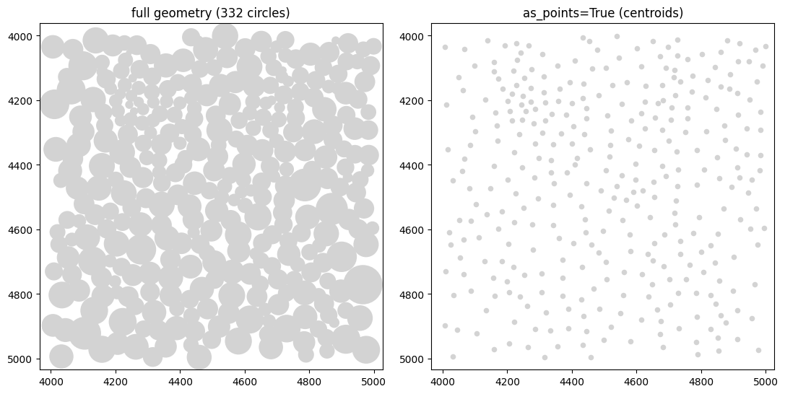
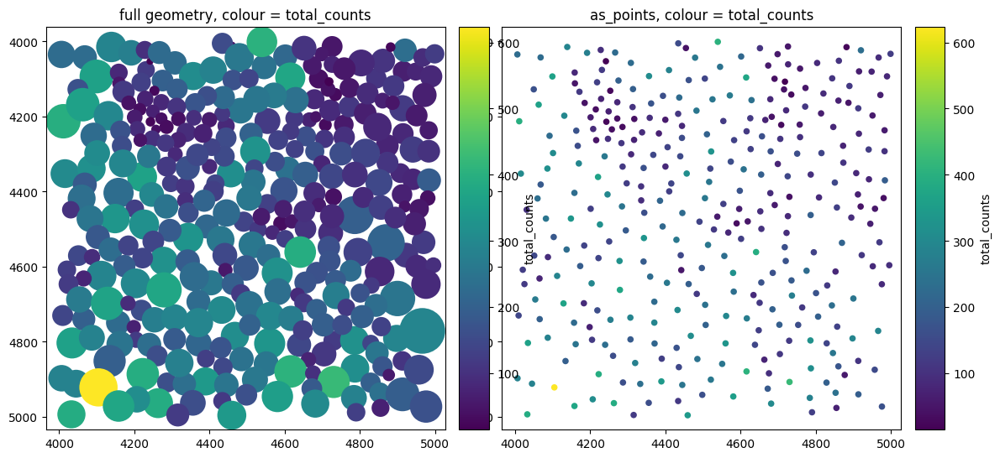
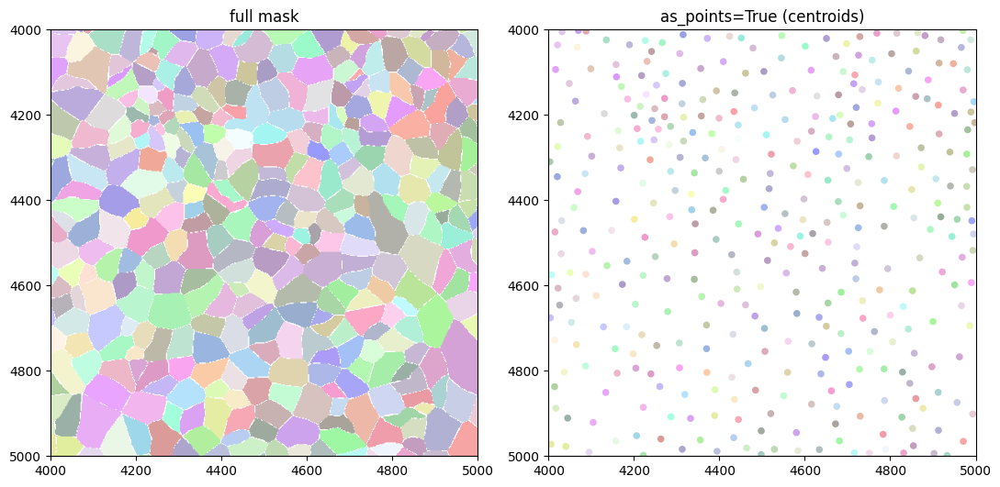
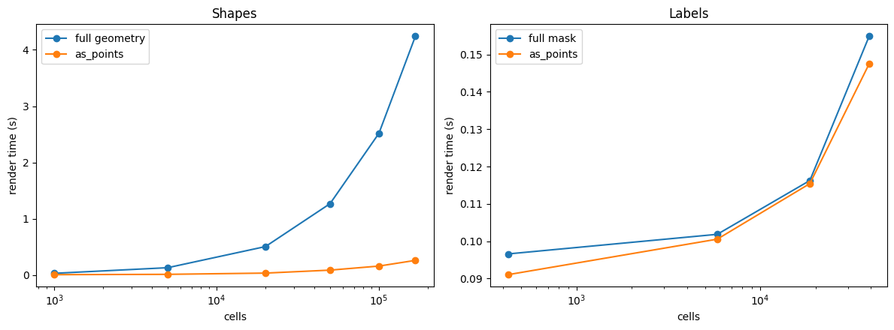
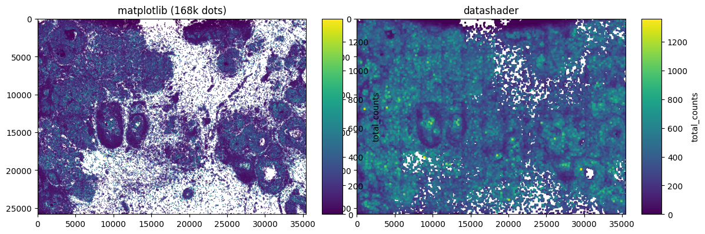

Rendering elements as points with as_points#
spatialdata-plot normally draws each element as its full geometry: a shape is
its polygon or circle, a labels element is its filled segmentation mask. Passing
as_points=True to render_shapes() or render_labels() instead draws one dot
per element, placed at its centroid. You keep where each object is and what
colour it has, but drop its size and outline.
This notebook shows the how and the why:
what the option looks like on real data, for both shapes and labels;
what it ignores (
outline_*,shape,contour_px);the backend it picks and the ~50 000-element rule;
and — the reason it exists — what it costs, measured. The headline: for shapes it is a large speed win; for labels it is mostly a change of representation, not speed.
We use a real Xenium human breast-cancer section (~168 000 cells) so the speed numbers are meaningful rather than synthetic.
Setup#
The dataset is the Xenium replicate-1 human breast-cancer sample, converted to
the SpatialData Zarr format and hosted on the scverse example-data bucket. It is
~3.4 GB; pooch downloads it once and caches it, so re-runs are instant.
This notebook is not re-executed in CI (the download is too large); its outputs are committed and trusted. Run it locally to reproduce them.
import warnings
warnings.filterwarnings("ignore")
import time
import matplotlib.pyplot as plt
import numpy as np
import pooch
import spatialdata as sd
import spatialdata_plot # noqa: F401 (registers the .pl accessor)
from spatialdata import SpatialData, bounding_box_query, rasterize
XENIUM_URL = (
"https://s3.embl.de/spatialdata/spatialdata-sandbox/"
"xenium_rep1_io_spatialdata_0.7.1.zip"
)
unzipped = pooch.retrieve(
XENIUM_URL,
known_hash=None,
fname="xenium_rep1_io_spatialdata_0.7.1.zip",
processor=pooch.Unzip(),
progressbar=True,
)
zarr_path = next(p.split(".zarr")[0] + ".zarr" for p in unzipped if ".zarr" in p)
sdata = sd.read_zarr(zarr_path)
sdata
SpatialData object, with associated Zarr store: /Users/tim.treis/Library/Caches/pooch/xenium_rep1_io_spatialdata_0.7.1.zip.unzip/data.zarr
├── Images
│ ├── 'morphology_focus': DataTree[cyx] (1, 25778, 35416), (1, 12889, 17708), (1, 6444, 8854), (1, 3222, 4427), (1, 1611, 2213)
│ └── 'morphology_mip': DataTree[cyx] (1, 25778, 35416), (1, 12889, 17708), (1, 6444, 8854), (1, 3222, 4427), (1, 1611, 2213)
├── Points
│ └── 'transcripts': DataFrame with shape: (<Delayed>, 8) (3D points)
├── Shapes
│ ├── 'cell_boundaries': GeoDataFrame shape: (167780, 1) (2D shapes)
│ ├── 'cell_circles': GeoDataFrame shape: (167780, 2) (2D shapes)
│ └── 'xenium_landmarks': GeoDataFrame shape: (3, 2) (2D shapes)
└── Tables
└── 'table': AnnData (167780, 313)
with coordinate systems:
▸ 'aligned', with elements:
morphology_focus (Images)
▸ 'global', with elements:
morphology_focus (Images), morphology_mip (Images), transcripts (Points), cell_boundaries (Shapes), cell_circles (Shapes), xenium_landmarks (Shapes)
Two things to note in the object above. First, there are 167 780 cells — big
enough that how we draw them matters. Second, Xenium ships the cell outlines as
shapes (cell_circles and cell_boundaries), and there is no labels
element: no segmentation-mask raster. We will make one further down by
rasterizing the boundaries, so we can show as_points on labels too.
Throughout, we work on a small crop for the pictures (so individual cells are visible) and on the full section for the timings.
1. Shapes: full geometry vs one dot per centroid#
render_shapes(..., as_points=True) replaces each circle/polygon with a single
marker at its centroid. size sets the marker area (matplotlib’s scatter s).
Because only the centroid is drawn, outline_* and shape are ignored.
XMIN, YMIN, XMAX, YMAX = 4000, 4000, 5000, 5000 # a 1000 x 1000 micron window
crop = bounding_box_query(
sdata,
min_coordinate=[XMIN, YMIN],
max_coordinate=[XMAX, YMAX],
axes=("x", "y"),
target_coordinate_system="global",
)
n_crop = len(crop["cell_circles"])
print(f"{n_crop} cells in the crop")
fig, axes = plt.subplots(1, 2, figsize=(11, 5.5))
crop.pl.render_shapes("cell_circles").pl.show(
ax=axes[0], title=f"full geometry ({n_crop} circles)"
)
crop.pl.render_shapes("cell_circles", as_points=True, size=30).pl.show(
ax=axes[1], title="as_points=True (centroids)"
)
fig.tight_layout()
332 cells in the crop

Colour is resolved exactly as for the full geometry — the dot inherits the value
the shape would have had. Here we colour by total_counts from the annotating
table; the categorical/continuous handling, palette/cmap, legends and
colourbars all behave identically.
fig, axes = plt.subplots(1, 2, figsize=(11, 5.5))
crop.pl.render_shapes("cell_circles", color="total_counts", cmap="viridis").pl.show(
ax=axes[0], title="full geometry, colour = total_counts"
)
crop.pl.render_shapes(
"cell_circles", color="total_counts", cmap="viridis", as_points=True, size=30
).pl.show(ax=axes[1], title="as_points, colour = total_counts")
fig.tight_layout()

2. Labels: segmentation masks as centroids#
Xenium has no labels element, so we build a real one from the real cell
boundaries: rasterize(..., return_regions_as_labels=True) paints each cell’s
polygon with its integer id, giving a proper segmentation mask (pixel value =
cell id).
render_labels(..., as_points=True) then draws one dot per label. The centroids
are computed from the rendered (display-resolution) raster, so it stays cheap;
contour_px and outline_* are ignored.
cell_masks = rasterize(
crop["cell_boundaries"],
["x", "y"],
min_coordinate=[XMIN, YMIN],
max_coordinate=[XMAX, YMAX],
target_coordinate_system="global",
target_unit_to_pixels=1.0,
return_regions_as_labels=True,
)
crop["cell_masks"] = cell_masks
fig, axes = plt.subplots(1, 2, figsize=(11, 5.5))
crop.pl.render_labels("cell_masks").pl.show(ax=axes[0], title="full mask")
crop.pl.render_labels("cell_masks", as_points=True, size=30).pl.show(
ax=axes[1], title="as_points=True (centroids)"
)
fig.tight_layout()

3. The speed trade-off#
This is why the option exists. We subsample the real cells across a range of counts and time each rendering, holding the backend at matplotlib so we compare drawing N polygons/masks against drawing N dots directly.
def time_best(fn, repeat=3):
# Best wall-clock of `repeat` runs, closing figures between them.
best = np.inf
for _ in range(repeat):
t0 = time.perf_counter()
fn()
plt.close("all")
best = min(best, time.perf_counter() - t0)
return best
# Shapes: draw N circles vs N centroid dots.
circ = sdata["cell_circles"]
shape_ns = [1_000, 5_000, 20_000, 50_000, 100_000, len(circ)]
shape_full, shape_pts = [], []
for n in shape_ns:
s = SpatialData(shapes={"c": circ.iloc[:n].copy()})
shape_full.append(time_best(lambda: s.pl.render_shapes("c", method="matplotlib").pl.show())) # noqa: B023
shape_pts.append(
time_best(lambda: s.pl.render_shapes("c", as_points=True, method="matplotlib").pl.show()) # noqa: B023
)
print(f"N={n:>7}: full {shape_full[-1]:6.2f}s as_points {shape_pts[-1]:5.2f}s "
f"({shape_full[-1] / shape_pts[-1]:.0f}x)")
N= 1000: full 0.03s as_points 0.01s (3x)
N= 5000: full 0.13s as_points 0.02s (9x)
N= 20000: full 0.51s as_points 0.04s (14x)
N= 50000: full 1.27s as_points 0.09s (14x)
N= 100000: full 2.52s as_points 0.16s (16x)
N= 167780: full 4.24s as_points 0.26s (16x)
# Labels: draw the filled mask vs N centroid dots. We rasterize progressively
# larger crops (more cells) to grow N.
label_sides = [1_000, 4_000, 8_000, 12_000]
x0, y0 = 2_000, 2_000
label_ns, label_full, label_pts = [], [], []
for side in label_sides:
cb = bounding_box_query(
sdata["cell_boundaries"],
min_coordinate=[x0, y0],
max_coordinate=[x0 + side, y0 + side],
axes=("x", "y"),
target_coordinate_system="global",
)
m = rasterize(
cb, ["x", "y"],
min_coordinate=[x0, y0], max_coordinate=[x0 + side, y0 + side],
target_coordinate_system="global", target_unit_to_pixels=1.0,
return_regions_as_labels=True,
)
s = SpatialData(labels={"m": m})
label_ns.append(len(cb))
label_full.append(time_best(lambda: s.pl.render_labels("m").pl.show())) # noqa: B023
label_pts.append(
time_best(lambda: s.pl.render_labels("m", as_points=True, method="matplotlib").pl.show()) # noqa: B023
)
print(f"N={len(cb):>6}: full mask {label_full[-1]:5.2f}s as_points {label_pts[-1]:5.2f}s")
N= 424: full mask 0.10s as_points 0.09s
N= 5833: full mask 0.10s as_points 0.10s
N= 18606: full mask 0.12s as_points 0.12s
N= 39125: full mask 0.15s as_points 0.15s
fig, (axL, axR) = plt.subplots(1, 2, figsize=(12, 4.5))
axL.plot(shape_ns, shape_full, "o-", label="full geometry")
axL.plot(shape_ns, shape_pts, "o-", label="as_points")
axL.set(title="Shapes", xlabel="cells", ylabel="render time (s)")
axL.set_xscale("log")
axL.legend()
axR.plot(label_ns, label_full, "o-", label="full mask")
axR.plot(label_ns, label_pts, "o-", label="as_points")
axR.set(title="Labels", xlabel="cells", ylabel="render time (s)")
axR.set_xscale("log")
axR.legend()
fig.tight_layout()

The two panels tell different stories, and that is the key lesson:
Shapes — a large, growing win. Every circle is a vector primitive matplotlib has to draw; a centroid is one scatter point. At the full section (~168 000 cells)
as_pointsis on the order of 10–15× faster, and the gap widens with cell count.Labels — essentially free either way. A labels element renders as a raster (an
imshowdownsampled to the display), whose cost depends on display pixels, not cell count. Computing centroids costs about the same. So for labelsas_pointsis not a speed optimisation — it is a different look (dots instead of filled regions), useful for decluttering or overlaying on an image, at roughly the same price.
Rule of thumb: reach for as_points on shapes when you have many objects and
don’t need their morphology; reach for it on labels when you want the
centroid representation, not for speed.
4. Backend and the ~50 000 rule#
The centroid dots can be drawn by either backend, chosen with method:
method="matplotlib"(per-glyph scatter) — exact, great up to tens of thousands of dots.method="datashader"(density raster) — scales to millions.method=None(default) — matplotlib, but auto-switches to datashader above ~50 000 centroids (AS_POINTS_DS_AUTO = 50_000), because matplotlib’s per-glyph cost (~18 µs/dot) starts to dominate there.
One caveat: datashader aggregates then shades, so it cannot represent “one distinct random colour per cell” (the default colouring of a label element with no colour column). In that case it falls back to matplotlib with a warning. With a real colour column (like below) both backends work; they differ only in look.
fig, axes = plt.subplots(1, 2, figsize=(11, 5.5))
sdata.pl.render_shapes(
"cell_circles", color="total_counts", as_points=True, method="matplotlib"
).pl.show(ax=axes[0], title="matplotlib (168k dots)")
sdata.pl.render_shapes(
"cell_circles", color="total_counts", as_points=True, method="datashader"
).pl.show(ax=axes[1], title="datashader")
fig.tight_layout()

When to reach for as_points#
Many shapes, morphology not needed — a quick overview of hundreds of thousands of cells, coloured by a value, without waiting on polygon drawing.
Overlaying positions on an image — dots read more clearly than filled masks on top of tissue.
Not for label speed — if you already have a labels element, rendering the mask is just as fast; use
as_pointsonly if you want the dot look.Remember what’s dropped — size, outline and shape are gone. When those carry meaning (spot size, cell area, boundary detail), keep the full geometry.
For reproducibility#
# ruff: noqa: F401, F811, I001, E402
# fmt: off
import spatialdata_plot
%load_ext watermark
# fmt: on
%watermark -v -m -p spatialdata,spatialdata_plot,matplotlib,numpy,datashader,pooch
Python implementation: CPython
Python version : 3.14.4
IPython version : 9.13.0
spatialdata : 0.7.3
spatialdata_plot: 0.4.1
matplotlib : 3.10.9
numpy : 2.4.4
datashader : 0.19.0
pooch : 1.9.0
Compiler : Clang 20.1.8
OS : Darwin
Release : 25.2.0
Machine : arm64
Processor : arm
CPU cores : 8
Architecture: 64bit